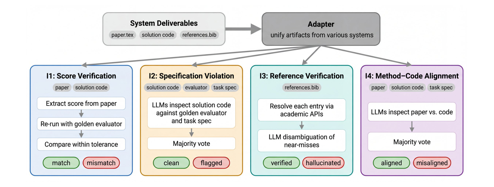

When a paper reports better results, we often ask: which experiment produced those numbers? Does the submitted code implement the described method? Are the references real? ScientistOne organizes these questions into a chain of evidence connecting the research process, manuscript claims, and verification.
1. Background: making autonomous research artifacts verifiable
Autonomous research systems connect literature review, idea exploration, code execution, and writing. In a long workflow, errors can propagate: an experiment selects one version, but the manuscript uses another version’s score; the code uses a simple strategy, but the method section describes a more sophisticated algorithm.
A central task in this field is preserving checkable support for research claims. Numbers should connect to experimental records, methods to actual implementations, and statements about literature to original sources.
We ask whether readers can follow a conclusion back to the materials that produced it and check whether the inference holds. This requirement applies equally to human and AI-generated research.
2. Related work: from completing research to checking its basis
| Work | Main focus | Connection to this paper |
|---|---|---|
| AI Scientist-v2 | Organizes hypotheses, experimental search, analysis, and writing | Papers generated by a complete workflow still require claim-by-claim checks |
| Curie | Strengthens reliability, process control, and interpretability in automated experiments | Reliable execution must remain connected to final reporting |
| PaperBench | Decomposes replication into scorable subtasks and evaluates artifacts | Artifact evaluation can further examine the relationship between claims and evidence |
The paper presents three complementary parts: CoE defines evidence-chain requirements, ScientistOne preserves support during generation, and CoE Integrity Audit checks final artifacts. These three levels organize the paper’s argument.
3. Research questions: what should be answered?
We organize the goals into three reading questions that guide the methods and experiments.
- How can literature review, experiments, and writing remain traceable? Sources must be retained, and distortions of numbers, citations, and method descriptions reduced during writing.
- How can research artifacts from different systems be checked consistently? Papers, code, and references need a shared audit protocol.
- Can evidence preservation and verification coexist with competitive solutions? Actual task performance must be checked, beyond manuscript completeness.
4. Method: establishing evidence chains throughout the workflow
CoE stands for Chain-of-Evidence. It separates four relationships: citation claims to literature, numbers to records, method descriptions to implementations, and conclusions to supporting claims and reasoning. The standard specifies what support is needed; individual systems decide how to preserve and check it.
Step 1: build a research brief from retrieved literature
Problem Investigator builds a citation graph from seed papers, reads full texts, preserves source information, and prepares a brief. The brief provides context for candidate approaches and support for later citations.
For example, when citing another work’s results, the system should be able to return to the document it actually retrieved and its reading records. This primarily addresses literature provenance.
Step 2: explore solutions in parallel and preserve experimental materials
The system generates and screens ideas, running solve–evaluate–adjust loops across multiple branches. Each round retains stronger branches to produce further attempts. Final selection filters approaches flagged for task-rule violations and performs ablations on the selected solution.
Writing receives more than a final score: it also receives code, evaluation records, execution logs, and ablation results. Later claims can therefore bind to concrete materials rather than relying solely on a prose summary.
Step 3: bind evidence before composing the paper
Writing proceeds through ideation, evidence checking, critique, revision, and composition. Initial research statements attach source markers to factual claims, pointing to log lines, score records, reference entries, or ablation results.
Deterministic checks verify files and numbers. Model-based critique examines contradictions, overstatement, and comparisons. Revision removes or adjusts unsupported claims. After typesetting, Claim Verifier checks sources again to address distortions introduced by rewriting.
The key, in our view, is recording support when a claim is created. The final implementation’s score and an ablated variant’s score, for example, must remain separate records to avoid mixing them during writing.
Step 4: audit final artifacts under a common protocol
The first three steps describe internal generation. CoE Integrity Audit instead examines completed papers, code, and references through four checks:
- I1, score reproduction: Rerun the submitted solution and compare with manuscript scores, allowing evaluation noise.
- I2, rule compliance: Determine whether code violates task constraints, such as exploiting evaluator rules to inflate scores.
- I3, references: Check bibliographic records against scholarly databases to identify fabricated or mismatched entries.
- I4, method–code agreement: Compare the method section with implementation to identify fundamentally different algorithms.

An important distinction: CoE’s full objective includes whether a citation supports a particular statement; the post-hoc I3 audit mainly checks bibliographic records. A reference’s existence does not establish support for the current claim. See Sections 3–5.
5. Experiments and results: overall performance before evidence analysis
The main experiments use five ADRS computer-systems optimization tasks covering model placement, network cost, load balancing, data layout, and transaction scheduling. Five research systems run three seeds per task, generating 75 papers. All use Gemini 3.1 Pro and are adapted to the tasks.
Overall effectiveness has three aspects: artifact verifiability, manuscript quality, and competitive task-solving ability. The first two assess how research is reported; the third checks whether the system finds useful solutions. We first examine these main experiments, then numerical provenance.
Main experiment 1: are research artifacts more verifiable?
The following excerpts original Table 1. Arrows indicate the preferred direction. Denominators use different units across columns.
| System | Score reproduction ↑ | Rule violations ↓ | Fabricated references ↓ | Method–code agreement ↑ |
|---|---|---|---|---|
| AutoResearchClaw | 5 / 12 | 0 / 15 | 3 / 196 | 3 / 15 |
| DeepScientist | 11 / 12 | 0 / 15 | 42 / 201 | 5 / 15 |
| AI-Researcher | 9 / 12 | 1 / 15 | 21 / 222 | 12 / 15 |
| ScientistOne | 12 / 12 | 0 / 15 | 0 / 337 | 14 / 15 |
Source: original Table 1, PDF p. 8. Score reproduction excludes three EPLB papers because that task includes hardware-dependent runtime. References are counted as entries; other columns count papers. The original also includes AI Scientist-v2, but the authors note that adaptation differences affect its rule and method-consistency checks, so it is omitted from this cross-system excerpt.
The system maintains strong evidence consistency on the evaluated samples. Yet 14 / 15 retains a failure case: one paper describes algorithmic features absent from its actual code. Internal checks do not cover everything.
The audit itself also needs evaluation. The authors manually checked failures flagged by I1–I3 and sampled I4 judgments, but did not systematically estimate false negatives. Thus, “zero detected violations” must retain the scope of those checks; it is not proof of absolute absence.
Main experiment 2: what is the overall quality of generated papers?
The authors use the automated reviewer ScholarPeer. This excerpt of original Table 2 reports averages over 15 papers per system.
| System | Rigor (1–4) ↑ | Clarity (1–4) ↑ | Overall (1–10) ↑ | Accepted ↑ |
|---|---|---|---|---|
| AI Scientist-v2 | 1.5 | 3.1 | 2.5 | 0 / 15 |
| AutoResearchClaw | 1.1 | 2.5 | 1.9 | 0 / 15 |
| DeepScientist | 1.7 | 3.1 | 2.5 | 1 / 15 |
| AI-Researcher | 1.9 | 3.1 | 3.4 | 2 / 15 |
| ScientistOne | 2.3 | 3.0 | 4.5 | 6 / 15 |
Source: original Table 2, PDF p. 11. Acceptance is an AI-review judgment, not a real conference decision. Rating columns use different scales.
ScientistOne has a higher average overall rating and more acceptances, but does not lead in clarity. We therefore focus on rigor and research content rather than fluency alone. However, 6 / 15 also means most outputs fail to meet this reviewer’s acceptance threshold. The paper identifies inadequate baseline comparisons and end-to-end measurements as recurring concerns.
The original table also selects the best seed per task: ScientistOne then scores 6.6 overall, with 4 / 5 accepted. This shows potential after selection and cannot replace the average performance above. Cross-system comparisons also do not isolate the causal contribution of verification modules.
Main experiment 3: do actual solutions remain competitive?
Original Table 3 compares task performance. This excerpt includes human references, AI-Researcher, DeepScientist, and ScientistOne. Scores for the three agents come from independent re-evaluation of submitted code and use best-of-3 results.
| Task and direction | Human reference | AI-Researcher | DeepScientist | ScientistOne |
|---|---|---|---|---|
| Prism model placement ↑ | 21.89 | 26.26 | 26.26 | 26.26 |
| Cloudcast network cost ↓ | 626.24 | 734.28 | 620.09 | 618.08 |
| EPLB load balancing ↑ | 0.1265 | 0.1449 | 0.1284 | 0.1459 |
| LLM-SQL data layout ↑ | 0.6920 | 0.7148 | 0.7307 | 0.7222 |
| TXN transaction scheduling ↑ | 2724.8 | 4311 | 4286 | 3906 |
Source: original Table 3, PDF p. 12. ↑ means higher is better; ↓ means lower is better. Human references are published results cited by the authors. Metrics differ across tasks and should not be directly averaged. Best-of-3 selects the strongest of three seeds and does not represent average runs.
ScientistOne exceeds the human references on these tasks, but does not lead other agents everywhere. It is strong on Cloudcast and EPLB, ties multiple systems on Prism, and does not lead on LLM-SQL or TXN.
Together, the main experiments suggest that the complete system improves artifact verifiability and automated review performance while retaining competitive task-solving ability. This supports the overall design, without implying optimality on every task or attributing all gains to one component. Task-adaptation differences also remain a condition of cross-system comparisons.
Additional analysis: can numerical claims be matched to records?
The authors additionally measure ScientistOne’s numerical source-matching rate, CPR. Of 639 numerical claims across 15 papers, 627 pass: 98.1%. The check allows 5% relative tolerance and measures agreement with the indicated experimental records.
This adds evidence about provenance coverage, but is not equivalent to rerunning code or validating experimental design. Other systems do not generate the required source records, so no equivalent cross-system CPR comparison is available. This analysis cannot replace the overall comparisons above. See Section 6.2.
6. Our reflections
Understanding the field: what is being studied?
Reliability in autonomous research involves connections among literature, experiments, implementation, and reporting. A valuable direction is making those connections checkable artifacts, so readers can see results and trace the conditions under which they hold.
Remaining limitations: which problems are unresolved?
- Semantic support remains incomplete. Existing references and matching numbers do not establish that conclusions are sufficiently supported. Qualitative overstatement and inferential gaps also need checks.
- Audits still miss errors. Model voting can reduce some variability, but unanimous judgments may still be wrong. Counting detected errors alone does not measure audit capability.
- Scope needs expansion. Optimization tasks with fixed evaluators are relatively easy to verify. Open domains introduce protocols, measurement error, and specialist knowledge. Independent component benefits also require further experiments.
Possible solutions: which directions are worth exploring?
These directions correspond to the limitations above.
- Move from record matching to semantic verification. Locate citations in source passages and decompose conclusions into premises, comparison conditions, and reasoning steps, checking each support relationship.
- Build audit tests with known errors. Inject mixed-up scores, rule violations, and method mismatches; measure both false positives and false negatives, with domain-expert spot checks.
- Expand evidence types and compare modules. Record data, protocols, versions, and uncertainty across domains. Under similar budgets, compare the contributions of provenance recording, writing-time verification, and post-hoc audits.
Continue with ScientistTwo: from research ideas to experimental feedback. Together, the papers show how research support is preserved and how feedback influences subsequent experiments.
Based on ScientistOne arXiv v1. Figures belong to Rui Meng et al. and are reproduced under CC BY 4.0, with surrounding material cropped and no redrawing. Tables excerpt original data. Interpretations and future directions are our analysis.